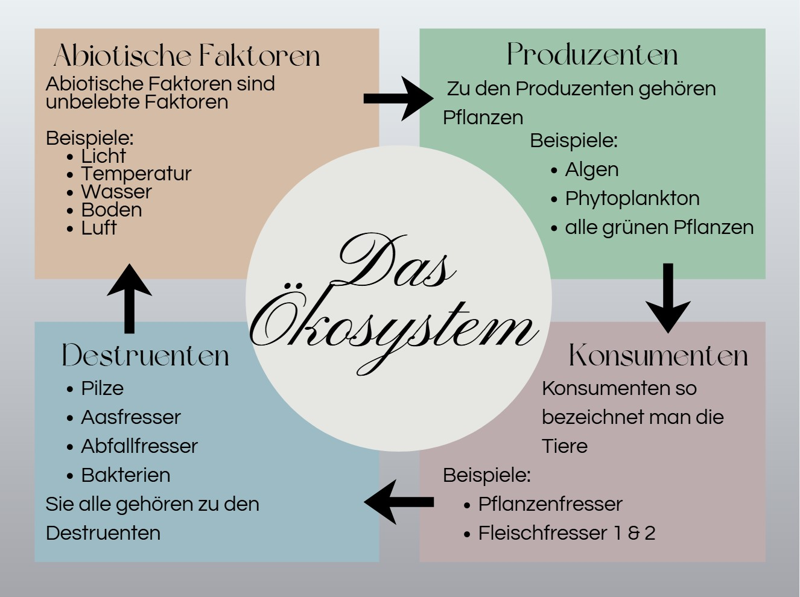

Inhaltsverzeichnis - Kapitel 4
- 4.1 Ökologie – Lebewesen und ihre Umwelt
- 4.2 Grundbegriffe der Ökologie
- 4.2.1 Ökologische Ebenen und Forschungsbereiche
- 4.3 Verschiedene Ökosysteme
- 4.4 Ökofaktoren
- 4.5 Das Zusammenwirken von Ökofaktoren
- 4.6 Boden – Grundlage allen Lebens
- 4.7 Anpassung von Tieren an die Umgebungstemperatur
- 4.8 Tiergeographische Regeln
- 4.9 Die Nische
- 4.10 Biotische Umweltfaktoren
4.1 Ökologie – Lebewesen und ihre Umwelt
Was genau ist die Ökologie? Ökologie beschreibt das Zusammenspiel aller Lebewesen und ihrer Umwelt. Man kann es sich wie eine Waage vorstellen, bei der auf beiden Seiten gleich viel Gewicht liegt. Dieses Gleichgewicht sorgt dafür, dass die Natur funktioniert. Wenn man etwas an dieser Waage verändert – zum Beispiel Gewicht entfernt oder hinzufügt – gerät alles aus dem Gleichgewicht. Genauso ist es in der Natur: Wenn ein wichtiges Tier wie der Wolf fast ausstirbt, fehlt den Rehen ihr natürlicher Feind. Dadurch vermehren sie sich stärker, fressen mehr Pflanzen und bringen das gesamte Gleichgewicht der Natur durcheinander. Ausserdem untersucht die Ökologie, wie Energie und Nährstoffe in einem Ökosystem weitergegeben werden. Deshalb wird sie auch als die Lehre der Umwelt bezeichnet – sozusagen die Verhaltensregeln der Natur.
- Ökologie = Zusammenspiel von Lebewesen und Umwelt
- Natur funktioniert wie eine Waage → braucht Gleichgewicht
- Eingriffe stören das Gleichgewicht (z. B. Wolf fehlt → Rehe vermehren sich → Pflanzen werden weniger)
- Energie und Nährstoffe werden im Ökosystem weitergegeben
- Ökologie = Lehre der Umwelt oder „Verhaltensregeln der Natur“
Die unerwünschte Kröte in Australien
1935 wurden Aga-Kröten aus Südamerika nach Australien gebracht, um Schädlinge in Zuckerrohrfeldern zu bekämpfen. Doch die Idee ging schief: Die Kröten vermehrten sich schnell, breiteten sich über grosse Teile des Landes aus und wurden selbst zum Problem. Heute gibt es schätzungsweise über 1,5 Milliarden Kröten. Sie verdrängen heimische Arten, sind giftig für viele Tiere und stören das ökologische Gleichgewicht. Eine Aga-Kröte kann pro Jahr rund 35'000 Eier legen und sich dadurch extrem schnell vermehren. Zusätzlich ist ihr Gift für viele heimische Tiere wie Hasen oder Füchse lebensgefährlich. Wenn diese Tiere die Kröte fressen oder mit ihrem Gift in Kontakt kommen, können sie daran sterben. Dadurch geraten viele einheimische Tierarten unter Druck und das gesamte Ökosystem wird geschwächt. Doch die Aga-Kröte ist nur eine von vielen eingeschleppten Arten in Australien. Auch Hasen, Füchse, Katzen oder Dromedare wurden von Siedlern ausgesetzt und bedrohen heute die empfindliche Flora und Fauna. Weil Australiens Ökosystem sehr fragil ist, können sich einheimische Arten kaum gegen solche Eindringlinge durchsetzen. Das zeigt, wie komplex Ökosysteme sind und dass Eingriffe des Menschen nur mit grosser Vorsicht erfolgen sollten, da sie unerwartete und oft schädliche Folgen haben können.
- Aga‑Kröten wurden 1935 nach Australien gebracht, um Schädlinge zu bekämpfen.
- Sie vermehrten sich stark und wurden selbst zum Problem.
- Heute leben über 1,5 Milliarden Kröten dort.
- Sie sind giftig und gefährlich für viele heimische Tiere.
- Eine Kröte legt ca. 35'000 Eier pro Jahr.
- Sie verdrängen einheimische Arten und stören das Gleichgewicht.
- Auch andere eingeschleppte Tiere bedrohen Australiens Natur.
- Das zeigt: Ökosysteme sind empfindlich und Eingriffe können grosse Folgen haben
4.2 Grundbegriffe der Ökologie
Was ist ein Ökosystem?
Ein Ökosystem besteht immer aus drei Teilen:
- Abiotische Faktoren → das sind unbelebte Dinge wie Licht, Wasser, Temperatur, Boden und Luft
- Biotische Faktoren → das sind alle Lebewesen
- Wechselwirkungen → beschreibt, wie alles miteinander zusammenhängt
Die biotischen Faktoren lassen sich in drei Gruppen einteilen:
- Produzenten
- Konsumenten
- Destruenten
Um das besser zu verstehen, hilft die folgende Abbildung mit einer passenden Erklärung.

Abiotische Faktoren (unbelebte Faktoren)
Das sind Dinge, die nicht leben, aber den Lebensraum formen.
- Licht
- Temperatur
- Wasser
- Boden
- Luft
Sie beeinflussen:
- den Lebensraum
- die Lebewesen, die dort leben
Biotische Faktoren (belebte Faktoren)
Das sind alle Lebewesen, die miteinander in Beziehung stehen.
- Tiere fressen andere Tiere
- Pflanzen werden gefressen
- Lebewesen beeinflussen ihren Lebensraum (z. B. Biber bauen Dämme)
Die drei Gruppen der biotischen Faktoren
1. Produzenten
- Pflanzen
- Stellen durch Fotosynthese ihre Nahrung selbst her
- Wandeln Sonnenlicht in Energie um
2. Konsumenten
- Tiere
- Können ihre Nahrung nicht selbst herstellen
- Müssen andere Lebewesen fressen
3. Destruenten
- Bakterien, Pilze, Würmer
- Zersetzen tote Lebewesen
- Machen Nährstoffe wieder für Pflanzen verfügbar
- Schließen den Kreislauf
- Abiotische Faktoren = unbelebte Umwelt (Licht, Wasser, Temperatur, Boden, Luft)
- Biotische Faktoren = alle Lebewesen
- Wechselwirkungen = wie alles zusammenhängt
- Produzenten stellen Nahrung selbst her (Fotosynthese)
- Konsumenten müssen andere Lebewesen fressen
- Destruenten zersetzen tote Lebewesen und schließen den Kreislauf
- Ein Ökosystem funktioniert wie ein Kreislauf – alles beeinflusst alles
4.2.1 Ökologische Ebenen und Forschungsbereiche
1. Organismus
Was bedeutet das?
Ein Organismus ist ein einzelnes Lebewesen.
Beispiele:
- eine Maus
- ein Baum
- ein Frosch
- ein Mensch
- eine Biene
Worum geht es in der Autökologie?
→ Wie ein einzelnes Lebewesen überlebt: Nahrung, Temperatur, Licht, Feinde usw.
Beispiel erklärt:
Eine einzelne Pflanze braucht Licht, Wasser und Nährstoffe. Die Autökologie untersucht genau das.
2. Population
Was bedeutet das?
Eine Population ist eine Gruppe von Lebewesen derselben Art, die im gleichen Gebiet leben.
Beispiele:
- alle Mäuse in einem Feld
- alle Fische in einem See
- alle Tannenbäume in einem Wald
- alle Bienen in einem Bienenstock
Worum geht es in der Populationsökologie?
→ Wie viele es gibt, warum sie mehr oder weniger werden, wie sie sich fortpflanzen.
Beispiel erklärt:
Wenn es viele Rehe gibt, fressen sie mehr Pflanzen → Population wächst oder schrumpft.
3. Biozönose
Was bedeutet das?
Biozönose = alle Lebewesen, die zusammen in einem Lebensraum leben.
Beispiele:
- Fische
- Frösche
- Pflanzen
- Insekten
- Bakterien
→ Alle zusammen bilden die Biozönose.
Worum geht es in der Synökologie?
→ Wie Arten zusammenleben, sich beeinflussen, fressen, helfen oder konkurrieren.
Beispiel erklärt:
Ein Frosch frisst Insekten, ein Hecht (Raubfisch) frisst Frösche, Pflanzen produzieren Sauerstoff → alles hängt zusammen.
4. Biotop
Was bedeutet das?
Biotop = der unbelebte Lebensraum.
Beispiele:
- Wasser
- Boden
- Temperatur
- Licht
- Steine
- Luft
Beispiel erklärt:
Ein Teich hat warmes Wasser, bestimmte Tiefe, bestimmte Pflanzen → das ist das Biotop.
5. Ökosystem
Was bedeutet das?
Ökosystem = Biozönose + Biotop → also Lebewesen + unbelebte Umwelt zusammen.
Beispiele:
- Wald
- See
- Wiese
- Meer
- Stadtpark
Beispiel erklärt:
Im Wald leben Tiere und Pflanzen (Biozönose) und es gibt Boden, Licht, Temperatur (Biotop). Zusammen = Wald‑Ökosystem.
Worum geht es in der Ökosystemforschung?
- Wie Energie und Stoffe im Ökosystem fliessen
- Wie Lebewesen und Umwelt zusammenwirken
- Wie Ökosysteme sich verändern (z. B. durch Klimawandel)
Beispiel:
Wie wirkt sich ein heisser Sommer auf einen See aus?
→ weniger Sauerstoff, weniger Fische, mehr Algen
6. Biosphäre
Was bedeutet das?
Die Biosphäre ist alles Leben auf der Erde + alle Lebensräume.
Beispiele:
- alle Meere
- alle Wälder
- alle Wüsten
- alle Tiere, Pflanzen, Mikroorganismen
Beispiel erklärt:
Die Biosphäre ist wie eine riesige „Hülle“ aus Leben, die die ganze Erde umgibt.
Worum geht es in der Biosphärenforschung?
- Wie sich globale Prozesse auf das Leben auswirken
- Wie Klima, Atmosphäre und Ökosysteme zusammenhängen
- Wie der Mensch die Erde verändert
Beispiel:
Wie beeinflusst der Klimawandel die gesamte Erde?
→ Meeresspiegel steigt, Arten sterben aus, Lebensräume verändern sich.
4.3 Verschiedene Ökosysteme
Ein Ökosystem ist ein Lebensraum, in dem viele Pflanzen und Tiere zusammenleben. Jedes Ökosystem sieht anders aus und hat andere Bedingungen, zum Beispiel wie viele Nährstoffe es gibt oder wie viel Wasser. Auch der Mensch kann ein Ökosystem verändern, zum Beispiel durch Landwirtschaft oder Städte. Dadurch kann sich auch die Artenvielfalt verändern.
1. Magerwiese
- Eigenschaften: wenig Nährstoffe, viele Blumen
- Artenvielfalt: hoch
- Einfluss des Menschen: mittel
2. Fettwiese
- Eigenschaften: viele Nährstoffe, viel Gras, Löwenzahn, Hahnenfuss
- Artenvielfalt: mittel
- Einfluss des Menschen: hoch
3. Sumpf / Moor
- Eigenschaften: sehr feucht, kleine Tümpel, niedriger pH‑Wert, Torf (teilweise zersetztes Pflanzenmaterial in nassen, sauerstoffarmen Böden)
- Artenvielfalt: mittel bis hoch
- Einfluss des Menschen: hoch
4. Hecke
- Eigenschaften: verschiedene Sträucher, guter Lebensraum für Tiere
- Artenvielfalt: hoch
- Einfluss des Menschen: mittel
5. Nadelwald / Fichtenwald (Monokultur)
- Eigenschaften: hohe Fichten, viel Schatten, nur eine Baumart
- Artenvielfalt: tief
- Einfluss des Menschen: sehr hoch
6. Mischwald
- Eigenschaften: viele Baumarten, viel Licht, unterschiedlich alte Bäume
- Artenvielfalt: hoch
- Einfluss des Menschen: gering bis mittel
7. Feld / Acker
- Eigenschaften: stark genutzt, regelmässig bearbeitet
- Artenvielfalt: tief
- Einfluss des Menschen: sehr hoch
8. Stadt / Siedlungsgebiet
- Eigenschaften: bebaut, künstlich, wenig Natur
- Artenvielfalt: tief bis mittel
- Einfluss des Menschen: sehr hoch
4.4 Ökofaktoren
Worum geht es?
Arten reagieren unterschiedlich auf Umweltfaktoren wie Temperatur oder Feuchtigkeit. Jede Art besitzt einen bestimmten Bereich, in dem sie gut leben kann. Diesen Bereich nennt man Toleranzbereich. Um diese Unterschiede zu beschreiben, verwendet man Fachbegriffe wie stenök, euryök, physiologische Potenz und ökologische Potenz.
Stenök und euryök – Wie breit ist der Toleranzbereich?
- Stenök: Eine Art verträgt nur kleine Schwankungen eines Umweltfaktors → enger Bereich.
- Euryök: Eine Art verträgt grosse Schwankungen → breiter Bereich.
Diese Begriffe beschreiben also, wie breit der mögliche Lebensraum einer Art ist.
Physiologische und ökologische Potenz – Unter welchen Bedingungen wird gemessen?
Physiologische Potenz:
Der theoretisch mögliche Toleranzbereich einer Art ohne Konkurrenz
(z. B. im Labor).
Ökologische Potenz:
Der tatsächliche Toleranzbereich einer Art mit Konkurrenz
in der Natur.
Die ökologische Potenz ist fast immer kleiner, weil andere Arten bestimmte Bereiche besetzen.
Wie hängt das zusammen?
Die physiologische Potenz zeigt, wie euryök eine Art theoretisch ist.
Die ökologische Potenz zeigt, wie stenök sie in der Natur wirken kann.
Eine Art kann also eigentlich anpassungsfähig sein, aber durch Konkurrenz eingeschränkt werden.
Beispiel: Der Mehlkäfer
Der Mehlkäfer (dessen Larve als „Mehlwurm“ bekannt ist) zeigt diesen Zusammenhang gut:
- Ohne Konkurrenz: Er kann in einem breiten Temperaturbereich leben → grosse physiologische Potenz → wirkt euryök.
- Mit Konkurrenz: Andere Käferarten verdrängen ihn aus vielen Bereichen → kleiner ökologischer Bereich → wirkt stenök.
Dieses Beispiel zeigt: Eine Art kann theoretisch viel aushalten, nutzt aber in der Natur oft nur einen kleinen Teil ihres möglichen Lebensraums.
- Toleranzbereich: Bereich, in dem eine Art gut leben kann.
- Stenök: verträgt nur kleine Schwankungen → enger Bereich.
- Euryök: verträgt grosse Schwankungen → breiter Bereich.
- Physiologische Potenz: theoretischer Toleranzbereich ohne Konkurrenz.
- Ökologische Potenz: tatsächlicher Toleranzbereich mit Konkurrenz.
- Zusammenhang: physiologisch = eher euryök; ökologisch = wirkt oft stenök.
- Beispiel Mehlkäfer: ohne Konkurrenz breiter Bereich, mit Konkurrenz stark eingeschränkt.
4.5 Das Zusammenwirken von Ökofaktoren
Kommt bald.
4.6 Boden – Grundlage allen Lebens
Kommt bald.
4.7 Anpassung von Tieren an die Umgebungstemperatur
Kommt bald.
4.8 Tiergeographische Regeln
Kommt bald.
4.9 Die Nische
Kommt bald.
4.10 Biotische Umweltfaktoren
Kommt bald.